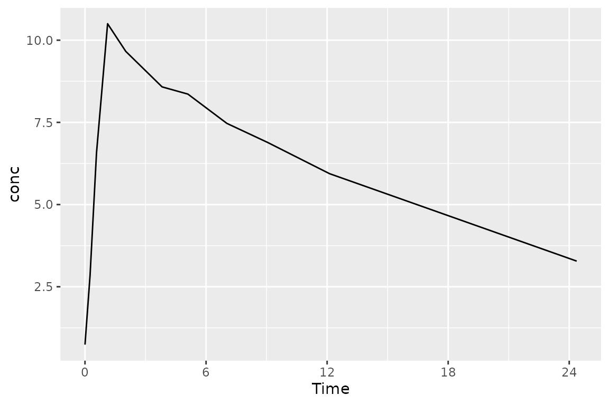
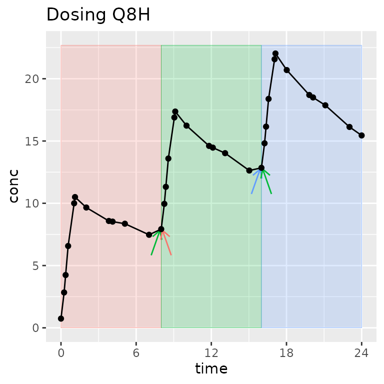
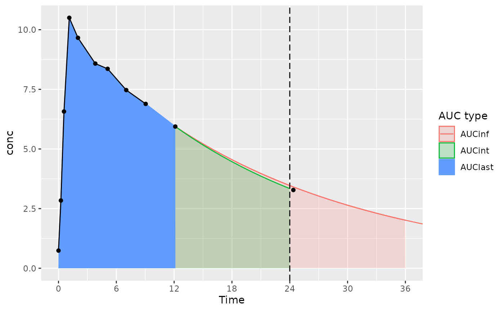
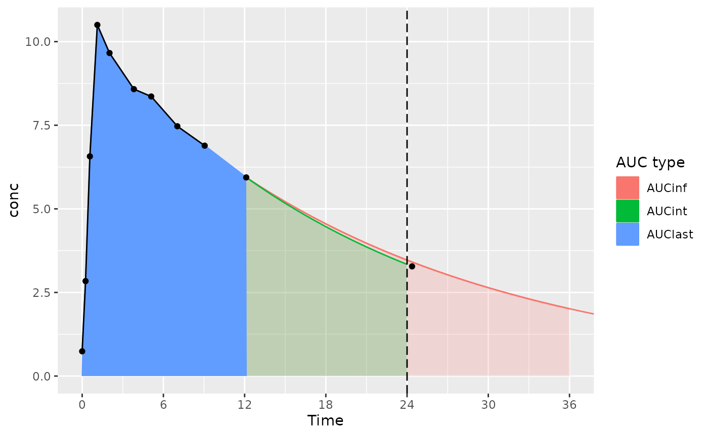
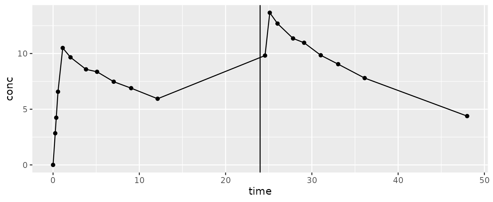
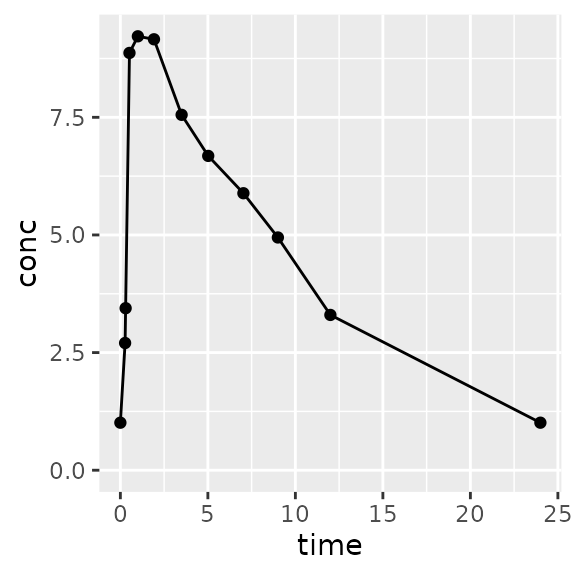

PKNCA Training Sessions
William Denney
19 November 2021
Source:vignettes/v30-training-session.Rmd
v30-training-session.RmdIntroduction to PKNCA and Basics of Its Use
Creation of these materials were supported by funding from the Metrum Research Group.
Introduction to PKNCA
PKNCA is a tool for calculating noncompartmental analysis (NCA) results for pharmacokinetic (PK) data.
… but, you already knew that or you wouldn’t be here.
PKNCA has several foci:
- be regulatory-ready
- it has approximately 100% test coverage.
- be reproducible
- it has a focus on being scriptable.
- get the right answer or none at all
- it will try to know what you want,
- but all decisions can be overridden, and
- if there is a question that may cause an error or an unanticipated result, either no result will output or an error will be raised.
Some NCA Definitions
- Cmax: The maximum observed concentration
- Tmax: The time of the maximum observed concentration
- tlast: The time of the last concentration above the limit of quantification
-
AUC: Area under the concentration-time curve. Some
important AUC variants are:
- AUClast: AUC from time zero to tlast
- AUCint: AUC from time zero to the end of an interval of time, often extrapolated or interpolated (e.g. AUC0-24hr)
- AUC∞: AUC from time zero to tlast then extrapolated from tlast to time infinity using the half life
Dataset Basics
NCA Data are Not Tidy as a Single Dataset
“Tidy datasets… have a specific structure: each variable is a column, each observation is a row, and each type of observational unit is a table.” - Hadley Wickham (https://doi.org/10.18637/jss.v059.i10)
CDISC has NCA tidied, and PKNCA follows that model:
- concentration-time is a dataset (PC domain;
PKNCAconc()object) - dose-time is a dataset (EX/EC domains;
PKNCAdose()object) - NCA results are a dataset (PP domain;
pk.nca()output)
Dataset Basics: Minimum data
PKNCA requires at minimum concentration, time, and what you want to calculate.

Dataset Basics: What columns are needed?
Column names are provided by the input to PKNCAconc()
and PKNCAdose(); they are not hard-coded.
Columns that can be used include:
-
PKNCAconc(): concentration, time, groups; data exclusions; half-life inclusion and exclusion -
PKNCAdose(): dose, time, groups; route, rate/duration of infusion; data exclusions - intervals given to
PKNCAdata(): groups, start, end, and any NCA parameters to calculate
Dataset Basics: Example data
In the following slides, abbreviated data from an example study where two treatments (“A” and “B”) are administered to two subjects (1 and 2).
- For PKNCA, the groups will be Treatment and
Subject.
- PKNCA considers groups in order with the subject identifier as the
last group (or the last group before a forward slash,
/, if/is present). - When indicated in order (
...|Treatment+Subject), PKNCA automatically knows to keep Treatment and drop Subject for summaries (more on that later).
- PKNCA considers groups in order with the subject identifier as the
last group (or the last group before a forward slash,
Dataset Basics: Example concentration data
| Subject | Treatment | Time | Conc |
|---|---|---|---|
| 1 | A | 0 | 0 |
| 1 | A | 2 | 2.143 |
| 1 | A | 8 | 0.4696 |
| 1 | B | 0 | 0 |
| 1 | B | 2 | 2.179 |
| 1 | B | 8 | 0.4852 |
| Subject | Treatment | Time | Conc |
|---|---|---|---|
| 2 | A | 0 | 0 |
| 2 | A | 2 | 1.937 |
| 2 | A | 8 | 0.4929 |
| 2 | B | 0 | 0 |
| 2 | B | 2 | 2.127 |
| 2 | B | 8 | 0.4804 |
Dataset Basics: Example dosing data
| Subject | Treatment | Time | Dose |
|---|---|---|---|
| 1 | A | 0 | 10 |
| 1 | B | 0 | 10 |
| Subject | Treatment | Time | Dose |
|---|---|---|---|
| 2 | A | 0 | 10 |
| 2 | B | 0 | 10 |
Dataset Basics: Example interval data
d_interval_1 <-
data.frame(
start=0, end=8,
cmax=TRUE, tmax=TRUE, auclast=TRUE
)| start | end | cmax | tmax | auclast |
|---|---|---|---|---|
| 0 | 8 | TRUE | TRUE | TRUE |
Groups are not required, if you want the same intervals calculated for each group.
Hands-on: First NCA calculation with PKNCA
library(dplyr)
library(ggplot2)
library(tidyr)
library(purrr)
library(PKNCA)
# Concentration data setup
d_conc <-
datasets::Theoph %>%
filter(Subject %in% 1)
o_conc <- PKNCAconc(conc~Time, data=d_conc)
# Setup intervals for calculation
d_intervals <- data.frame(start=0, end=24, cmax=TRUE, tmax=TRUE, auclast=TRUE, aucint.inf.obs=TRUE)
# Combine concentration and dose
o_data <- PKNCAdata(o_conc, intervals=d_intervals)
# Calculate the results (suppressMessages() hides a message that isn't needed now)
o_result <- suppressMessages(pk.nca(o_data))
# summary(o_result)PKNCA Functions
What functions are the most used?
-
PKNCAconc(): define a concentration-timePKNCAconcobject- All information about concentration data are given: concentration, time
- Optional information includes: grouping information (usually given), data to exclude, half-life inclusion and exclusion columns
-
PKNCAdose(): define a dose-timePKNCAdoseobject (optional)- dose amount and time are both optional
- Optional information includes: rate or duration of infusion, data to exclude
-
PKNCAdata(): combinePKNCAconc, optionallyPKNCAdose, and optionallyintervalsinto aPKNCAdataobject- the
PKNCAconcobject must be given; thePKNCAdoseobject is optional; interval definitions are usually given; calculation options may be given
- the
-
pk.nca(): calculate the NCA parameters from a data object into aPKNCAresultobject
How do I do a simple calculation? all steps
We will break this down in subsequent slides.
# Concentration data setup
d_conc <-
datasets::Theoph %>%
filter(Subject %in% 1)
o_conc <- PKNCAconc(conc~Time, data=d_conc)
# Dose data setup
d_dose <-
datasets::Theoph %>%
filter(Subject %in% 1) %>%
filter(Time == 0)
o_dose <- PKNCAdose(Dose~Time, data=d_dose)
# Combine concentration and dose
o_data <- PKNCAdata(o_conc, o_dose)
# Calculate the results
o_result <- pk.nca(o_data)How do I do a simple calculation? Concentration data
# Load your dataset as a data.frame
d_conc <-
datasets::Theoph %>%
filter(Subject %in% 1)
# Take a look at the data
pander::pander(head(d_conc, 2))| Subject | Wt | Dose | Time | conc |
|---|---|---|---|---|
| 1 | 79.6 | 4.02 | 0 | 0.74 |
| 1 | 79.6 | 4.02 | 0.25 | 2.84 |
# Define the PKNCAconc object indicating the concentration and time columns, the
# dataset, and any other options.
o_conc <- PKNCAconc(conc~Time, data=d_conc)How do I do a simple calculation? Dose data
# Load your dataset as a data.frame
d_dose <-
datasets::Theoph %>%
filter(Subject %in% 1) %>%
filter(Time == 0)
# Take a look at the data
pander::pander(d_dose)| Subject | Wt | Dose | Time | conc |
|---|---|---|---|---|
| 1 | 79.6 | 4.02 | 0 | 0.74 |
# Define the PKNCAdose object indicating the dose amount and time columns, the
# dataset, and any other options.
o_dose <- PKNCAdose(Dose~Time, data=d_dose)How do I do a simple calculation? Get results
To calculate summary statistics, use summary(); to
extract all individual-level results, use
as.data.frame().
The "caption" attribute of the summary describes how the
summary statistics were calculated for each parameter. (Hint:
pander::pander() knows how to use that to put the caption
on a table in a report.)
The individual results contain the columns for start time, end time, grouping variables (none in this example), parameter names, values, and if the value should be excluded.
How do I do a simple calculation? Get summary results
| start | end | N | auclast | cmax | tmax | half.life | aucinf.obs |
|---|---|---|---|---|---|---|---|
| 0 | 24 | 1 | 92.4 [NC] | . | . | . | . |
| 0 | Inf | 1 | . | 10.5 [NC] | 1.12 [1.12, 1.12] | 14.3 [NC] | 215 [NC] |
PKNCA datasets
How does PKNCA think about data?
Three types of data are inputs for calculation in PKNCA:
- concentration-time (
PKNCAconc), - dose-time (
PKNCAdose), and - intervals.
PKNCAconc and PKNCAdose objects can
optionally have groups. The groups in a PKNCAdose object
must be the same or fewer than the groups in PKNCAconc
object (for example, all subjects in a treatment arm may receive the
same dose).
What is an “interval” and how is it different than a “group”?
A group separates one full concentration-time profile for a subject that you may ever want to consider at the same time. Usually, it groups by study, treatment, analyte, and subject (other groups can be useful depending on the study design).
An interval selects a time range within a group.
One time can be in zero or more intervals, but only zero or one group. Intervals can be adjacent (0-12 and 12-24) or overlap (0-12 and 0-24). In other words, one sample may be used in more than one interval, but one sample will never be used in more than one group.
Legend: The group contains all points on the figure. Shaded regions indicate intervals. Arrows indicate points shared between intervals within the group.

Common data management requirements before sending data to PKNCA
- Time must not be missing for
PKNCAconc(if given toPKNCAdose, it must not be missing). - Below the limit of quantification (BLQ) concentrations must be set
to zero (not
NA). - Imputation of time zero is required for AUC calculation.
- Especially for actual-time calculations, imputation of the beginning of the interval is usually needed.
Columns must be created for:
- Concentration or dose,
- Time
- Groups
- usually columns for study, treatment arm, subject;
- sometimes analyte, formulation, period (needed in case the same subject receives the same treatment arm multiple times)
Setup your concentration data
- Concentration data must be numeric
- Time must be numeric and not be missing
Setup your concentration data
- Concentration data must be numeric
- Time must be numeric and not be missing
- Groups can be anything, setup at the level of the individual

Group: 🗸 a pod of killer whales
Setup your dosing data (if you have it and even if you don’t)
Normal dosing data setup:
PKNCAdose(dose~time|actarm+usubjid, data=d_dose)
- Dose amount must be numeric — or it can be omitted
PKNCAdose(~time|actarm+usubjid, data=d_dose)
- Time must be numeric and not be missing — or it can be omitted
PKNCAdose(dose~.|actarm+usubjid, data=d_dose)
- Groups can be anything — may be grouped at a higher level than the
individual
- Useful when all dose amounts and times are the same within an arm:
PKNCAdose(dose~time|actarm, data=d_dose) - Useful dose amount is the same at all times within an arm:
PKNCAdose(dose~.|actarm, data=d_dose) - Useful when times are all the same within an arm but dose may
differ:
PKNCAdose(~time|actarm, data=d_dose)
- Useful when all dose amounts and times are the same within an arm:
Define your intervals
Intervals have columns for:
-
startandendtimes for the interval, - groups matching any level of grouping; intervals apply by a merge/join with the groups
- parameters to calculate (
TRUEmeans to calculate it;FALSEmeans don’t). The full list of available parameters is in the selection of calculation intervals vignette.- You only have to specify the parameter you want, not all parameters.
Calculations above the hood
Calculate without dosing data
o_conc <- PKNCAconc(conc~Time|Treatment+Subject, data=d_conc)
try({
o_data <- PKNCAdata(o_conc)
summary(pk.nca(o_data))
})## Error in PKNCAdata.default(data.conc = data.conc, data.dose = data.dose, :
## If data.dose is not given, intervals must be givenWhoops! Without dosing, we need intervals.
Calculate without dosing data, try 2
o_conc <- PKNCAconc(conc~Time|Treatment+Subject, data=d_conc)
d_intervals <- data.frame(start=0, end=Inf, cmax=TRUE, tmax=TRUE, half.life=TRUE, aucinf.obs=TRUE)
o_data_manual_intervals <- PKNCAdata(o_conc, intervals=d_intervals)
summary(pk.nca(o_data_manual_intervals))## No dose information provided, calculations requiring dose will return NA.## start end Treatment N cmax tmax half.life aucinf.obs
## 0 Inf High dose 5 9.16 [19.4] 3.48 [0.980, 3.55] 7.73 [1.08] 120 [26.2]
## 0 Inf Low dose 7 8.30 [15.2] 1.12 [0.630, 2.02] 8.50 [2.67] 111 [31.6]
##
## Caption: cmax, aucinf.obs: geometric mean and geometric coefficient of variation; tmax: median and range; half.life: arithmetic mean and standard deviationDosing data helps with interval setup
o_conc <- PKNCAconc(conc~Time|Treatment+Subject, data=d_conc)
o_dose <- PKNCAdose(Dose~dose_time|Treatment+Subject, data=d_dose)
o_data_auto_intervals <- PKNCAdata(o_conc, o_dose)
o_data_auto_intervals$intervals$aucint.inf.obs <- TRUE
summary(pk.nca(o_data_auto_intervals))## start end Treatment N auclast cmax tmax half.life
## 0 24 Low dose 7 70.2 [14.4] . . .
## 0 Inf Low dose 7 . 8.30 [15.2] 1.12 [0.630, 2.02] 8.50 [2.67]
## 0 24 High dose 5 81.3 [34.2] . . .
## 0 Inf High dose 5 . 9.16 [19.4] 3.48 [0.980, 3.55] 7.73 [1.08]
## aucinf.obs aucint.inf.obs
## . 94.1 [22.5]
## 111 [31.6] 111 [31.6]
## . 105 [23.3]
## 120 [26.2] 120 [26.2]
##
## Caption: auclast, cmax, aucinf.obs, aucint.inf.obs: geometric mean and geometric coefficient of variation; tmax: median and range; half.life: arithmetic mean and standard deviationAUC considerations with PKNCA (1/3)

The considerations below mainly apply to actual-time data; nominal-time data usually have measurements at the start and end time for the interval.
With an interval start and end of 0 and 24 (and the last measurement time just after 24 hours):
- AUClast is calculated only based on points within the interval (the AUClast color in the figure)
AUC considerations with PKNCA (2/3)

The considerations below mainly apply to actual-time data; nominal-time data usually have measurements at the start and end time for the interval.
With an interval start and end of 0 and 24 (and the last measurement time just after 24 hours):
- AUCint looks at the points in the interval, and if there is no measurement at the interval end time, interpolates or extrapolates to the interval end time (the AUClast and AUCint color in the figure)
AUC considerations with PKNCA (2/3)

The considerations below mainly apply to actual-time data; nominal-time data usually have measurements at the start and end time for the interval.
With an interval start and end of 0 and 24 (and the last measurement time just after 24 hours):
- AUC∞ is calculated based on AUClast, tlast, and the half-life from tlast, only using data within the interval– no data after the end of the interval.
- Ensure that the interval used for calculating AUC∞
includes all the points desired (usually,
end=Inf).
Hands-on workshop
Steady-state intramuscular administration
The data for the exercise are from a PK study of amikacin in a killer whale and a beluga whale. (DOI: 10.1638/03-078)
(Callback…)
Steady-state intramuscular administration
library(PKNCA)
d_conc <- read.csv("c:/tmp/whale_conc.csv")
d_dose <- read.csv("c:/tmp/whale_dose.csv")
head(d_conc)
head(d_dose)
o_conc <- PKNCAconc(concentration~time|Animal, data=d_conc)
o_dose <- PKNCAdose(dose~time|Animal, data=d_dose)
o_data <- PKNCAdata(o_conc, o_dose)
o_data$intervals
o_nca <- pk.nca(o_data)
summary(o_nca)
summary(o_nca, drop.group=c())
as.data.frame(o_nca)Control your data
Including and excluding data points
Data may be included/excluded in two ways:
- Overall: excluded a row of data from all analyses
- Half-life: excluded from half-life calculations, but included in all other analyses
For both ways of including/excluding data, it is defined by a column
in the input data. The column is either NA or an empty
string ("") to indicate “no” or any other text to indicate
“yes”.
Exclude data points overall
Use the exclude argument for PKNCAconc() or
PKNCAdose().
When you use exclude, this is how you give your data to
PKNCA:
d_before_exclude <-
data.frame(
time=0:4,
conc=c(0, 2, 1, 0.5, 0.25),
not_this=c(NA, "Not this", NA, NA, NA)
)
o_conc <-
PKNCAconc(
data=d_before_exclude,
conc~time,
exclude="not_this"
)
And, this is how PKNCA thinks about it:
| time | conc | not_this |
|---|---|---|
| 0 | 0 | NA |
| 2 | 1 | NA |
| 3 | 0.5 | NA |
| 4 | 0.25 | NA |
Exclude data points overall
o_conc <- PKNCAconc(data=d_before_exclude, conc~time, exclude="not_this")Digression: How is λz automatically calculated?
- Filter the data from the first point after tmax (or from
tmax if
allow.tmax.in.half.life=TRUE) to tlast and excluding BLQ in the middle. - Fit the semi-log line from 3 points before tlast (3 can
be changed with the
min.hl.pointsoption) to tlast.- Repeat for all sets of points from there to the first point included.
- If that 3 points are not available, it is not calculated.
- Among the fits, select the best adjusted r2 (within a
tolerance of
adj.r.squared.factor). - Require λz
> 0. - If more than one fit is available at this point, select the one with the most points included.
Note: WinNonlin first requires λz> 0 then selects for
adjusted r2. Therefore, WinNonlin will occasionally provide a
half-life when PKNCA will not, but the fit line is not as good (as
measured by r2). The selection of filtering order is an
intentional feature with PKNCA, and it generally has minimal impact on
summary statistics because the quality of the half-life fit is usually
low in this scenario.
λz control (manual exclusions and inclusions of data points)
Use the exclude_half.life or
include_half.life argument for PKNCAconc().
The two arguments behave very differently in how points are selected for
half-life.
exclude_half.life uses the same automatic point
selection method of curve stripping (described before), but it excludes
individual points from that calculation.
include_half.life uses no automatic point selection
method, and only points specifically noted by the analyst are
included.
Less-common calculations
Urine calculations
d_urine <-
data.frame(
conc=c(1, 2, 3),
urine_volume=c(200, 100, 300),
time=c(1, 2, 3)
)
o_conc <- PKNCAconc(data=d_urine, conc~time, volume="urine_volume")
d_intervals <- data.frame(start=0, end=24, ae=TRUE)
o_data <- PKNCAdata(o_conc, intervals=d_intervals)
o_nca <- suppressMessages(pk.nca(o_data))
summary(o_nca)## start end N ae
## 0 24 1 1300 [NC]
##
## Caption: ae: geometric mean and geometric coefficient of variationUrine calculations: understanding what is happening and potential hiccups
Intervals for urine are treated the same as any other interval type. Specifically, PKNCA does not look outside the start and end of the interval.
- Watch out for e.g. a 24-hour urine amount to be included in more than one interval because start = 0 and end = 24.
- Watch out for an actual start or end time to be outside of the interval and therefore to be omitted from calculations.
Calculations below the hood
PKNCA only calculates what is required, not every possible parameter (1 of 2)
If you don’t need a parameter, PKNCA won’t calculate it.
For example, if all you need is cmax, all you’ll get is
cmax.
o_conc <- PKNCAconc(data=data.frame(conc=2^-(1:4), time=0:3), conc~time)
o_data <- PKNCAdata(o_conc, intervals=data.frame(start=0, end=Inf, cmax=TRUE))
o_nca <- suppressMessages(pk.nca(o_data))
as.data.frame(o_nca)## # A tibble: 1 × 5
## start end PPTESTCD PPORRES exclude
## <dbl> <dbl> <chr> <dbl> <chr>
## 1 0 Inf cmax 0.5 NAPKNCA only calculates what is required, not every possible parameter (2 of 2)
If you need AUC0-, PKNCA will calculate other required parameters behind the scenes.
o_data <-
PKNCAdata(
o_conc,
intervals=
data.frame(
start=0, end=Inf,
aucinf.obs=TRUE
)
)
o_nca <- suppressMessages(pk.nca(o_data))
as.data.frame(o_nca)## # A tibble: 12 × 5
## start end PPTESTCD PPORRES exclude
## <dbl> <dbl> <chr> <dbl> <chr>
## 1 0 Inf tmax 0 NA
## 2 0 Inf tlast 3 NA
## 3 0 Inf clast.obs 0.0625 NA
## 4 0 Inf lambda.z 0.693 NA
## 5 0 Inf r.squared 1 NA
## 6 0 Inf adj.r.squared 1 NA
## 7 0 Inf lambda.z.time.first 1 NA
## 8 0 Inf lambda.z.n.points 3 NA
## 9 0 Inf clast.pred 0.0625 NA
## 10 0 Inf half.life 1 NA
## 11 0 Inf span.ratio 2 NA
## 12 0 Inf aucinf.obs 0.721 NAHow to select the correct parameters for calculations (aka, why are there 32 types of AUC in PKNCA?)
CDISC has one set of names, but they are not precise (e.g. AUCINT doesn’t tell the interpolation/extrapolation method).
PKNCA tries to be everything to everyone (in terms of parameters calculated), and it simultaneously tries to be precise. That yields many parameters.
See the Selection of Calculation Intervals vignette in the Parameters Available for Calculation in an Interval section for all available parameters.
When are intervals (partly) ignored?
Very few parameters reach outside of the start and
end of an interval for additional information about what is
being calculated. As of the writing of these training materials (PKNCA
version 0.9.5), the only parameters that look outside are the
aucint class of parameters.
AUCint may look after the end of the interval to calculate
the concentration at end.
Note: Watch out for a dose before the next concentration (e.g. a dose at 24 hours but the prior sample is around 12 and the next is around 25):

Control your results
Excluding results (Not the best way)
A simple way to exclude a value from results is to convert the results to a data.frame and then drop the rows you don’t want:
as.data.frame(o_nca) %>%
filter(PPTESTCD != "half.life")## # A tibble: 11 × 5
## start end PPTESTCD PPORRES exclude
## <dbl> <dbl> <chr> <dbl> <chr>
## 1 0 Inf tmax 0 NA
## 2 0 Inf tlast 3 NA
## 3 0 Inf clast.obs 0.0625 NA
## 4 0 Inf lambda.z 0.693 NA
## 5 0 Inf r.squared 1 NA
## 6 0 Inf adj.r.squared 1 NA
## 7 0 Inf lambda.z.time.first 1 NA
## 8 0 Inf lambda.z.n.points 3 NA
## 9 0 Inf clast.pred 0.0625 NA
## 10 0 Inf span.ratio 2 NA
## 11 0 Inf aucinf.obs 0.721 NABut, parameters derived from half-life remain.
Excluding results (The best way, 1/2)
When you use the exclude() function, parameters that are
dependent on an excluded parameter will be excluded.
o_nca_excluded <-
o_nca %>%
exclude(FUN=exclude_nca_span.ratio(3))
as.data.frame(o_nca_excluded)## # A tibble: 12 × 5
## start end PPTESTCD PPORRES exclude
## <dbl> <dbl> <chr> <dbl> <chr>
## 1 0 Inf tmax 0 NA
## 2 0 Inf tlast 3 NA
## 3 0 Inf clast.obs 0.0625 NA
## 4 0 Inf lambda.z 0.693 Span ratio < 3
## 5 0 Inf r.squared 1 Span ratio < 3
## 6 0 Inf adj.r.squared 1 Span ratio < 3
## 7 0 Inf lambda.z.time.first 1 Span ratio < 3
## 8 0 Inf lambda.z.n.points 3 Span ratio < 3
## 9 0 Inf clast.pred 0.0625 Span ratio < 3
## 10 0 Inf half.life 1 Span ratio < 3
## 11 0 Inf span.ratio 2 Span ratio < 3
## 12 0 Inf aucinf.obs 0.721 Span ratio < 3Excluding results (The best way, 2/2)
Now, everything dependent on the half-life is excluded in summaries.
summary(o_nca)## start end N aucinf.obs
## 0 Inf 1 0.721 [NC]
##
## Caption: aucinf.obs: geometric mean and geometric coefficient of variation
summary(o_nca_excluded)## start end N aucinf.obs
## 0 Inf 1 NC
##
## Caption: aucinf.obs: geometric mean and geometric coefficient of variationNCA-related calculations
Superposition
Superposition assumes linear kinetics and can convert a single-dose profile to multi-dose.
# Subject 2 is selected for a BLQ time=0 concentration
d_prep <-
datasets::Theoph %>%
filter(Subject == 2)
# Superposition to steady-state is the default
d_ss <-
superposition(
conc=d_prep$conc,
time=d_prep$Time,
tau=24
)
# Going to steady-state is also an option
# (n.tau=2 means the second dose)
d_second_dose <-
superposition(
conc=d_prep$conc,
time=d_prep$Time,
tau=24,
n.tau=2
)
# Want the profile for the first two doses
# together?
d_first_two <-
superposition(
conc=d_prep$conc,
time=d_prep$Time,
tau=48, # 48 hours
n.tau=1, # One tau interval (0 to 48 hours)
dose.times=c(0, 24)
)
Time-to-Steady-state calculations
Time-to-steady-state (tss) can be useful as a method to confirm that a subject is at steady-state. PKNCA can calculate tss using trough concentrations either with a monoexponential increase toward steady-state (preferred) or a linear trend back from the final point.
dose_times <- seq(0, 96-1, by=6)
d_multidose <-
superposition(
conc=d_prep$conc,
time=d_prep$Time,
tau=96, # 48 hours
n.tau=1, # One tau interval (0 to 48 hours)
dose.times=dose_times
)
pk.tss.monoexponential(
conc=d_multidose$conc, time=d_multidose$time, subject=rep(1, nrow(d_multidose)),
time.dosing=dose_times, subject.dosing=rep(1, length(dose_times)),
output="single"
)## tss.monoexponential.single
## 1 22.53005Reporting
Graphics are intentionally not part of PKNCA, but there are some tricks that can help…
Generate all individual profiles using the groups that you defined:
Best practices for Data -> PKNCA -> knitr
Make summary tables using the summary() function on the
NCA results, and use pander::pander() to make a pretty
table with captions.
| start | end | N | aucinf.obs |
|---|---|---|---|
| 0 | Inf | 1 | 0.721 [NC] |
Make an NCA data listing using the as.data.frame()
function on the NCA results.
pander::pander(as.data.frame(o_nca))Limitations
Units (especially clearance)
PKNCA does not (yet) support units. The most common place where that becomes an issue is with clearance which ends up having unusual units like “mg/(hr*ng/mL)” (with units of mg for dosing, hr for time, and ng/mL for concentration).
Data imputation
Some data points are required for inputs such as:
- the start of the interval for AUC,
- the end of the interval for some calculations (e.g. AUClast vs AUCint), and
- interpolated concentrations at the end of a urine interval for urinary PK calculations.
IV bolus AUC (need to add C0)
PKNCA does not have an IV-aware AUC calculation (yet). So, C0 must be separately imputed.
Hands-on
Single- and Multiple-dose, single analyte: Setup the underlying datasets
d_conc <-
datasets::Theoph %>%
rename(time=Time) %>%
mutate(
Subject=as.character(Subject)
)
d_multidose <-
PKNCAconc(conc~time|Subject, data=d_conc) %>%
superposition(tau=24, check.blq=FALSE)
d_singledose_single_analyte <-
d_conc %>%
mutate(
Study_Part="Single"
)
d_multidose_single_analyte <-
d_conc %>%
mutate(Day=1) %>%
bind_rows(
d_multidose %>% mutate(time=time + 120, Day=6)
) %>%
mutate(
Study_Part="Multiple"
)Single- and Multiple-dose, single analyte: Perform basic analysis
o_conc <- PKNCAconc(data=d_single_multi_conc, conc~time|Study_Part+Subject)
o_dose <- PKNCAdose(data=d_single_multi_dose, Dose~time|Study_Part+Subject)
o_data <- PKNCAdata(o_conc, o_dose)
o_data$intervals %>% select(-Subject) %>% unique() %>% as.data.frame()## start end auclast aucall aumclast aumcall aucint.last aucint.last.dose
## 1 0 24 TRUE FALSE FALSE FALSE FALSE FALSE
## 2 0 Inf FALSE FALSE FALSE FALSE FALSE FALSE
## 3 0 120 TRUE FALSE FALSE FALSE FALSE FALSE
## 4 120 144 TRUE FALSE FALSE FALSE FALSE FALSE
## aucint.all aucint.all.dose c0 cmax cmin tmax tlast tfirst clast.obs
## 1 FALSE FALSE FALSE FALSE FALSE FALSE FALSE FALSE FALSE
## 2 FALSE FALSE FALSE TRUE FALSE TRUE FALSE FALSE FALSE
## 3 FALSE FALSE FALSE TRUE FALSE TRUE FALSE FALSE FALSE
## 4 FALSE FALSE FALSE TRUE FALSE TRUE FALSE FALSE FALSE
## cl.last cl.all f mrt.last mrt.iv.last vss.last vss.iv.last cav ctrough
## 1 FALSE FALSE FALSE FALSE FALSE FALSE FALSE FALSE FALSE
## 2 FALSE FALSE FALSE FALSE FALSE FALSE FALSE FALSE FALSE
## 3 FALSE FALSE FALSE FALSE FALSE FALSE FALSE FALSE FALSE
## 4 FALSE FALSE FALSE FALSE FALSE FALSE FALSE FALSE FALSE
## cstart ptr tlag deg.fluc swing ceoi aucabove.predose.all
## 1 FALSE FALSE FALSE FALSE FALSE FALSE FALSE
## 2 FALSE FALSE FALSE FALSE FALSE FALSE FALSE
## 3 FALSE FALSE FALSE FALSE FALSE FALSE FALSE
## 4 FALSE FALSE FALSE FALSE FALSE FALSE FALSE
## aucabove.trough.all ae clr.last clr.obs clr.pred fe sparse_auclast
## 1 FALSE FALSE FALSE FALSE FALSE FALSE FALSE
## 2 FALSE FALSE FALSE FALSE FALSE FALSE FALSE
## 3 FALSE FALSE FALSE FALSE FALSE FALSE FALSE
## 4 FALSE FALSE FALSE FALSE FALSE FALSE FALSE
## time_above aucivlast aucivall aucivint.last aucivint.all aucivpbextlast
## 1 FALSE FALSE FALSE FALSE FALSE FALSE
## 2 FALSE FALSE FALSE FALSE FALSE FALSE
## 3 FALSE FALSE FALSE FALSE FALSE FALSE
## 4 FALSE FALSE FALSE FALSE FALSE FALSE
## aucivpbextall aucivpbextint.last aucivpbextint.all half.life r.squared
## 1 FALSE FALSE FALSE FALSE FALSE
## 2 FALSE FALSE FALSE TRUE FALSE
## 3 FALSE FALSE FALSE FALSE FALSE
## 4 FALSE FALSE FALSE FALSE FALSE
## adj.r.squared lambda.z lambda.z.time.first lambda.z.n.points clast.pred
## 1 FALSE FALSE FALSE FALSE FALSE
## 2 FALSE FALSE FALSE FALSE FALSE
## 3 FALSE FALSE FALSE FALSE FALSE
## 4 FALSE FALSE FALSE FALSE FALSE
## span.ratio thalf.eff.last thalf.eff.iv.last kel.last kel.iv.last aucinf.obs
## 1 FALSE FALSE FALSE FALSE FALSE FALSE
## 2 FALSE FALSE FALSE FALSE FALSE TRUE
## 3 FALSE FALSE FALSE FALSE FALSE FALSE
## 4 FALSE FALSE FALSE FALSE FALSE FALSE
## aucinf.pred aumcinf.obs aumcinf.pred aucint.inf.obs aucint.inf.obs.dose
## 1 FALSE FALSE FALSE FALSE FALSE
## 2 FALSE FALSE FALSE FALSE FALSE
## 3 FALSE FALSE FALSE FALSE FALSE
## 4 FALSE FALSE FALSE FALSE FALSE
## aucint.inf.pred aucint.inf.pred.dose aucivinf.obs aucivinf.pred
## 1 FALSE FALSE FALSE FALSE
## 2 FALSE FALSE FALSE FALSE
## 3 FALSE FALSE FALSE FALSE
## 4 FALSE FALSE FALSE FALSE
## aucivpbextinf.obs aucivpbextinf.pred aucpext.obs aucpext.pred cl.obs cl.pred
## 1 FALSE FALSE FALSE FALSE FALSE FALSE
## 2 FALSE FALSE FALSE FALSE FALSE FALSE
## 3 FALSE FALSE FALSE FALSE FALSE FALSE
## 4 FALSE FALSE FALSE FALSE FALSE FALSE
## mrt.obs mrt.pred mrt.iv.obs mrt.iv.pred mrt.md.obs mrt.md.pred vz.obs vz.pred
## 1 FALSE FALSE FALSE FALSE FALSE FALSE FALSE FALSE
## 2 FALSE FALSE FALSE FALSE FALSE FALSE FALSE FALSE
## 3 FALSE FALSE FALSE FALSE FALSE FALSE FALSE FALSE
## 4 FALSE FALSE FALSE FALSE FALSE FALSE FALSE FALSE
## vss.obs vss.pred vss.iv.obs vss.iv.pred vss.md.obs vss.md.pred vd.obs vd.pred
## 1 FALSE FALSE FALSE FALSE FALSE FALSE FALSE FALSE
## 2 FALSE FALSE FALSE FALSE FALSE FALSE FALSE FALSE
## 3 FALSE FALSE FALSE FALSE FALSE FALSE FALSE FALSE
## 4 FALSE FALSE FALSE FALSE FALSE FALSE FALSE FALSE
## thalf.eff.obs thalf.eff.pred thalf.eff.iv.obs thalf.eff.iv.pred kel.obs
## 1 FALSE FALSE FALSE FALSE FALSE
## 2 FALSE FALSE FALSE FALSE FALSE
## 3 FALSE FALSE FALSE FALSE FALSE
## 4 FALSE FALSE FALSE FALSE FALSE
## kel.pred kel.iv.obs kel.iv.pred auclast.dn aucall.dn aucinf.obs.dn
## 1 FALSE FALSE FALSE FALSE FALSE FALSE
## 2 FALSE FALSE FALSE FALSE FALSE FALSE
## 3 FALSE FALSE FALSE FALSE FALSE FALSE
## 4 FALSE FALSE FALSE FALSE FALSE FALSE
## aucinf.pred.dn aumclast.dn aumcall.dn aumcinf.obs.dn aumcinf.pred.dn cmax.dn
## 1 FALSE FALSE FALSE FALSE FALSE FALSE
## 2 FALSE FALSE FALSE FALSE FALSE FALSE
## 3 FALSE FALSE FALSE FALSE FALSE FALSE
## 4 FALSE FALSE FALSE FALSE FALSE FALSE
## cmin.dn clast.obs.dn clast.pred.dn cav.dn ctrough.dn Study_Part
## 1 FALSE FALSE FALSE FALSE FALSE Single
## 2 FALSE FALSE FALSE FALSE FALSE Single
## 3 FALSE FALSE FALSE FALSE FALSE Multiple
## 4 FALSE FALSE FALSE FALSE FALSE Multiple
o_nca <- pk.nca(o_data)Single- and Multiple-dose, single analyte: Use intervals for fewer subjects
d_intervals <-
data.frame(
start=0,
end=24,
Subject=c("1", "2"),
Study_Part="Single",
aucinf.obs=TRUE
)
o_data <- PKNCAdata(o_conc, o_dose, intervals=d_intervals)
o_nca <- pk.nca(o_data)## Warning: Study_Part=Single; Subject=3: No intervals for data## Warning: Study_Part=Single; Subject=4: No intervals for data## Warning: Study_Part=Single; Subject=5: No intervals for data## Warning: Study_Part=Single; Subject=6: No intervals for data## Warning: Study_Part=Single; Subject=7: No intervals for data## Warning: Study_Part=Single; Subject=8: No intervals for data## Warning: Study_Part=Single; Subject=9: No intervals for data## Warning: Study_Part=Single; Subject=10: No intervals for data## Warning: Study_Part=Single; Subject=11: No intervals for data## Warning: Study_Part=Single; Subject=12: No intervals for data## Warning: Study_Part=Multiple; Subject=1: No intervals for data## Warning: Study_Part=Multiple; Subject=2: No intervals for data## Warning: Study_Part=Multiple; Subject=3: No intervals for data## Warning: Study_Part=Multiple; Subject=4: No intervals for data## Warning: Study_Part=Multiple; Subject=5: No intervals for data## Warning: Study_Part=Multiple; Subject=6: No intervals for data## Warning: Study_Part=Multiple; Subject=7: No intervals for data## Warning: Study_Part=Multiple; Subject=8: No intervals for data## Warning: Study_Part=Multiple; Subject=9: No intervals for data## Warning: Study_Part=Multiple; Subject=10: No intervals for data## Warning: Study_Part=Multiple; Subject=11: No intervals for data## Warning: Study_Part=Multiple; Subject=12: No intervals for data
summary(o_nca)## start end Study_Part N aucinf.obs
## 0 24 Single 2 144 [69.0]
##
## Caption: aucinf.obs: geometric mean and geometric coefficient of variationSingle- and Multiple-dose, single analyte: Use custom intervals per subjects
# Find the time closest to 12 hours
d_intervals_prep <-
d_single_multi_conc %>%
filter(Study_Part == "Single") %>%
mutate(
time_deviation=abs(time-12)
) %>%
group_by(Subject, Study_Part) %>%
filter(time %in% time[time_deviation == min(time_deviation)])
d_intervals <-
d_intervals_prep %>%
select(Study_Part, Subject, end=time) %>%
mutate(
start=0,
aucinf.obs=TRUE
)
o_data <- PKNCAdata(o_conc, o_dose, intervals=d_intervals)
o_nca <- pk.nca(o_data)## Warning: Study_Part=Multiple; Subject=1: No intervals for data## Warning: Study_Part=Multiple; Subject=2: No intervals for data## Warning: Study_Part=Multiple; Subject=3: No intervals for data## Warning: Study_Part=Multiple; Subject=4: No intervals for data## Warning: Study_Part=Multiple; Subject=5: No intervals for data## Warning: Study_Part=Multiple; Subject=6: No intervals for data## Warning: Study_Part=Multiple; Subject=7: No intervals for data## Warning: Study_Part=Multiple; Subject=8: No intervals for data## Warning: Study_Part=Multiple; Subject=9: No intervals for data## Warning: Study_Part=Multiple; Subject=10: No intervals for data## Warning: Study_Part=Multiple; Subject=11: No intervals for data## Warning: Study_Part=Multiple; Subject=12: No intervals for data## Warning in summary.PKNCAresults(o_nca, drop.group = c("Subject", "end")):
## drop.group including start or end may result in incorrect groupings (such as
## inaccurate comparison of intervals). Drop these with care.## start Study_Part N aucinf.obs
## 0 Single 12 120 [29.5]
##
## Caption: aucinf.obs: geometric mean and geometric coefficient of variationSingle- and Multiple-dose, parent and metabolite
d_single_multi_conc_multi_analyte <-
bind_rows(
d_single_multi_conc %>% mutate(Analyte="Parent"),
d_single_multi_conc %>%
mutate(
Analyte="Metabolite",
conc=conc/2
)
)
o_conc <-
PKNCAconc(
data=d_single_multi_conc_multi_analyte,
conc~time|Study_Part+Subject/Analyte
)
o_dose <- PKNCAdose(data=d_single_multi_dose, Dose~time|Study_Part+Subject)
o_data <- PKNCAdata(o_conc, o_dose)
o_nca <- pk.nca(o_data)
summary(o_nca)## start end Study_Part Analyte N auclast cmax tmax
## 0 24 Single Parent 12 74.6 [24.3] . .
## 0 Inf Single Parent 12 . 8.65 [17.0] 1.14 [0.630, 3.55]
## 0 120 Multiple Parent 12 237 [38.0] 8.65 [17.0] 1.14 [0.630, 3.55]
## 120 144 Multiple Parent 12 115 [28.4] 10.0 [21.0] 1.09 [0.630, 3.55]
## 0 24 Single Metabolite 12 37.3 [24.3] . .
## 0 Inf Single Metabolite 12 . 4.32 [17.0] 1.14 [0.630, 3.55]
## 0 120 Multiple Metabolite 12 118 [38.0] 4.32 [17.0] 1.14 [0.630, 3.55]
## 120 144 Multiple Metabolite 12 57.4 [28.4] 5.02 [21.0] 1.09 [0.630, 3.55]
## half.life aucinf.obs
## . .
## 8.18 [2.12] 115 [28.4]
## . .
## . .
## . .
## 8.18 [2.12] 57.4 [28.4]
## . .
## . .
##
## Caption: auclast, cmax, aucinf.obs: geometric mean and geometric coefficient of variation; tmax: median and range; half.life: arithmetic mean and standard deviation